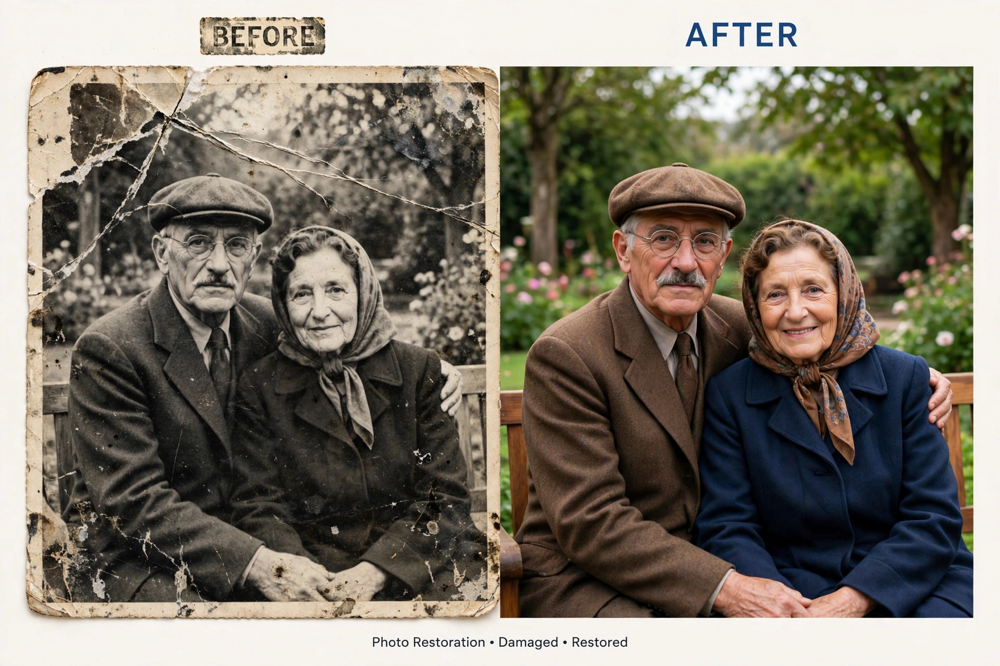

PHỤC CHẾ ẢNH CŨ
PHỤC CHẾ ẢNH CŨ PROMPT 1: PHỤC CHẾ ẢNH CŨ CÓ MÀU – GIỮ NGUYÊN 100% DANH TÍNH GỐC PROMPT PHỤC CHẾ ẢNH CŨ CÓ MÀU – TƯƠI SÁNG, SẮC NÉT, GIỮ NGUYÊN 100% D

Nội dung prompt
PHỤC CHẾ ẢNH CŨ PROMPT 1: PHỤC CHẾ ẢNH CŨ CÓ MÀU – GIỮ NGUYÊN 100% DANH TÍNH GỐC PROMPT PHỤC CHẾ ẢNH CŨ CÓ MÀU – TƯƠI SÁNG, SẮC NÉT, GIỮ NGUYÊN 100% DANH TÍNH GỐC Restore and professionally recover this old, damaged, torn, faded, blurry, scratched, low-resolution photograph into a fresh, clean, sharp, realistic color photo while preserving the original identity with absolute accuracy. MAIN OBJECTIVE: Transform the old damaged photograph into a high-resolution, photorealistic restored color image that looks fresh, bright, clean, sharp, natural, emotionally warm, and newly captured, while remaining faithful to the original photo. This is a professional photo restoration and tasteful colorization task. Restore the photograph beautifully, but do not redesign the people. ABSOLUTE IDENTITY PRESERVATION: Preserve every person exactly as in the original image. The face must remain the same person. Maintain 100% original: face shape, forehead, eyes, eyelids, eyebrows, eyelashes, nose, nostrils, lips, teeth, ears, cheekbones, jawline, chin, facial proportions, facial asymmetry, expression, gaze direction, age, skin texture, wrinkles, natural marks, hairstyle, hairline, body shape, pose, posture, and emotional feeling. DO NOT: change the face change facial identity change the eyes change the nose change the mouth change the smile change the jawline change the chin change the hairstyle change the hairline make the person younger make the person more attractive beautify the face smooth the skin unnaturally create a different person replace the face change ethnicity change age change body proportions change pose change the original facial expression IMPORTANT RESTORATION RULE: Restore and clarify existing facial details only. When facial areas are damaged or unclear, reconstruct conservatively based on the visible original structure. Do not invent new beauty features. Do not make the restored face look like a modern AI model. Slight natural imperfection is better than changing the identity. COLORIZATION STYLE: Create a realistic, fresh, bright, harmonious color version. Use tasteful natural color grading, not dull sepia. The image should look clean, lively, and newly preserved, not old yellow, muddy, or overly brown. Skin tone: natural Vietnamese / Asian skin tone healthy but realistic not too pale not too orange not too red not overly smooth preserve natural pores and age details Clothing color: Colorize clothing creatively but realistically within the original clothing form. You may choose harmonious, historically believable colors such as: army green, olive green, moss green, navy blue, deep blue, light blue, beige, cream, white ivory, warm brown, soft gray, muted pastel, or natural fabric tones. If the clothing looks like a uniform, workwear, military shirt, school shirt, or simple vintage shirt, choose a suitable color that makes the image brighter and more beautiful while still believable. For military-style or old uniform clothing, olive green, army green, khaki, or muted green are preferred. For simple shirts, use white ivory, light beige, pale blue, soft cream, or muted pastel if suitable. Do not use random flashy colors. Do not use neon colors. Do not create colorful patterns unless the original photo clearly shows patterns. Do not redesign the clothing shape. Do not add accessories. Do not add badges, medals, jewelry, buttons, or decorations that are not visible in the original. Background color: Preserve the original background and composition. Colorize the background softly and naturally. Use warm beige, soft gray, light brown, muted studio tones, natural wall tones, or gentle outdoor tones depending on the original image. The background should support the subject, not overpower the face. Do not replace the background. Do not create a new location. Do not add scenery that is not in the original photo. LIGHTING AND FRESHNESS: Make the photo brighter, cleaner, and more modern-looking while preserving the original lighting direction. Improve natural light, soft highlights, gentle contrast, and depth. The final image should feel like a fresh restored portrait, not a fantasy painting. Avoid harsh HDR. Avoid overexposure. Avoid overly smooth studio retouching. RESTORATION TASKS: Carefully remove: scratches, cracks, stains, dust, mold marks, torn paper damage, faded patches, scanning artifacts, compression noise, white spots, dark spots, blur, old photo degradation, yellow stains, uneven tones, and dirty texture. Recover: facial details, eye clarity, hair texture, skin texture, clothing texture, fabric folds, collar details, natural shadows, highlights, contours, edges, and tonal depth. Enhance: sharpness, clarity, micro-details, dynamic range, color harmony, realistic contrast, and natural depth. MISSING OR DAMAGED AREAS: Repair missing or damaged sections carefully. Only reconstruct what is logically supported by the visible parts of the original image. If a detail is unclear, keep it simple, natural, and conservative. Do not create unsupported new facial features. Do not change the person’s bone structure. IMAGE QUALITY: Ultra high-resolution restoration. Photorealistic. Fresh and sharp. Bright but natural. Clean but not plastic. Museum-grade photo restoration. Archival-quality recovery. Natural skin texture. Realistic hair texture. Realistic fabric texture. Natural color balance. No AI-generated look. No beauty filter. No glamour retouching. No fantasy details. No artistic reinterpretation. FINAL RESULT: The final image must look like a beautifully restored, fresh, sharp, realistic color version of the original photograph, as if the photo were professionally preserved and newly captured today, while keeping 100% of the original identity, facial structure, age, expression, hairstyle, clothing form, pose, composition, and background. PRIORITY SETTINGS: Identity preservation priority: 100/100 Facial accuracy priority: 100/100 Original structure preservation priority: 100/100 Restoration quality priority: 100/100 Beautiful natural colorization priority: 95/100 Fresh and bright visual quality priority: 95/100 Creative clothing color within realistic limits: allowed Creative generation priority: 10/100 Face replacement: forbidden Face beautification: forbidden Face redesign: forbidden Age change: forbidden Hairstyle change: forbidden Clothing shape redesign: forbidden Background replacement: forbidden Fantasy color: forbidden Neon color: forbidden Plastic skin: forbidden PROMPT 2: PHỤC CHẾ ẢNH CŨ KHÔNG MÀU / ĐEN TRẮNG – GIỮ NGUYÊN 100% DANH TÍNH GỐC Restore and professionally recover this old, damaged, torn, faded, blurry, scratched, low-resolution photograph into a fresh, clean, sharp, high-resolution black-and-white photo while preserving the original identity with absolute accuracy. MAIN OBJECTIVE: Transform the old damaged photograph into a clean, sharp, realistic black-and-white restored image that looks fresh, clear, natural, and professionally captured, while remaining 100% faithful to the original photo. CRITICAL RULE: This is a faithful black-and-white photo restoration task. Do not colorize. Do not redesign. Do not beautify. Do not modernize. Do not create a new person. Only restore the original photograph. IDENTITY PRESERVATION – ABSOLUTE PRIORITY: Preserve every person exactly as in the original image. Maintain 100% original: face shape, forehead, eyes, eyelids, eyebrows, eyelashes, nose, nostrils, lips, teeth, ears, cheekbones, jawline, chin, facial proportions, facial asymmetry, expression, gaze direction, age, skin texture, wrinkles, natural marks, hairstyle, hairline, body shape, pose, posture, and emotional feeling. DO NOT: change the face change the eyes change the nose change the mouth change the smile change the jawline change the chin change the hairstyle change the hairline make the person younger make the person more attractive smooth the skin unnaturally create a different person replace the face change the ethnicity change the age change the body proportions change the pose change the original facial expression CLOTHING PRESERVATION: Keep all clothing exactly as in the original photo. Restore the original fabric, folds, buttons, collars, seams, and clothing texture. Do not redesign clothing. Do not add new accessories. Do not modernize the outfit. Preserve the original black-and-white tonal values of the clothing. BACKGROUND PRESERVATION: Keep the original background, objects, lighting direction, composition, framing, and camera angle. Do not replace the background. Do not add new scenery. Do not remove meaningful original objects. Do not change the location or atmosphere. RESTORATION TASKS: Carefully remove scratches, cracks, stains, dust, mold marks, torn paper damage, faded patches, scanning artifacts, compression noise, white spots, dark spots, blur, and old photo degradation. Recover lost details using only the surrounding original visual information: facial detail, eye clarity, hair texture, skin texture, clothing texture, natural shadows, highlights, contours, edges, and tonal depth. BLACK-AND-WHITE RESTORATION: Keep the image in authentic black-and-white or soft vintage monochrome. Improve grayscale balance, contrast, clarity, and tonal depth. Restore natural light and shadow. Make the photo clean, fresh, sharp, and realistic without adding color. Do not over-contrast. Do not make the skin look plastic. Do not create artificial HDR effects. IMAGE QUALITY: Ultra high-resolution restoration. Sharp but natural. Clean but not plastic. Fresh like a newly captured professional black-and-white portrait. Photorealistic. Museum-grade restoration. Archival-quality recovery. Natural film-like texture. Realistic lighting. Realistic contrast. Natural skin texture and fine details. No AI-generated look. No beauty filter. No glamour retouching. No artistic reinterpretation. MISSING OR DAMAGED AREAS: Repair missing or damaged sections cautiously. Only reconstruct what is logically supported by the visible parts of the original image. If a detail is unclear, keep it natural and conservative. Do not create unsupported new facial features. FINAL RESULT: The final image must look like a perfectly preserved, fresh, sharp, realistic black-and-white version of the original photograph, as if it were newly photographed today, while keeping 100% of the original identity, facial structure, age, expression, clothing, pose, composition, and background. PRIORITY SETTINGS: Identity preservation priority: 100/100 Facial accuracy priority: 100/100 Original detail preservation priority: 100/100 Restoration quality priority: 100/100 Black-and-white tonal accuracy priority: 100/100 Creative generation priority: 0/100 Colorization: forbidden Face replacement: forbidden Beauty modification: forbidden Face redesign: forbidden Age change: forbidden Clothing redesign: forbidden Background replacement: forbidden Khi ảnh quá nát, nên dùng thêm câu này ở cuối prompt để AI bớt “bịa mặt”: When facial details are unclear, restore conservatively based on the visible original structure. Do not invent new beauty features. Slight natural softness is better than changing the person’s identity.
Prompt cùng thể loại
- Lệnh ẩn chatgpt
/magazinecover → bìa tạp chí /newspaper → báo in /poster → poster điện ảnh /billboard → quảng cáo billboard…
- Prompt AI Object to Heels - chan thanh giay
AI Object to Heels / Stepping Transformation - chân dẫm lên vật thể và biến hình thành giày cao gót. Prompt…
- Prompt Crystal Cutting
trend "Crystal Cutting ASMR" Prompt ảnh General: A luxurious apple sculpture completely covered in thousands…
- Chân Dung Điện Ảnh 8K
Các phần trong ngoặc là dữ liệu anh em nên thay bằng ngữ cảnh thật để output bớt chung chung. Prompt này…